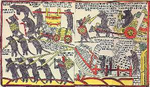

Борис Акунин
Мой календарь
Каким бы тяжелым или даже шоковым ни был закончившийся год, проводить его нужно обязательно благодарностью.
Как?! Вы считаете, что год был ужасен и благодарить его не за что?
Это Не Так.
Во-первых, скажите году спасибо за то, что вы его прожили до самого конца и живы. Вам повезло - в отличие от шестидесяти с лишним миллионов землян, для которых этот год стал последним (таково среднестатистическое число умирающих за 12 месяцев).
Во-вторых, не может быть, чтобы в этом году у вас совсем не было счастливых, радостных или просто приятных дней, событий, моментов.
31 декабря постарайтесь их все вспомнить и за каждое хорошее событие сказать спасибо.
В-третьих, год всегда заканчивается пиром, подарками, елкой и счастливыми пожеланиями. Омрачать этот праздник нельзя - иначе новый год родится калекой.
Ну то есть вы можете, конечно, проводить старый и встретить новый год по формуле, в свое время выведенной Виктором Ковалем: «С наступающим на горло и прошедшим по груди!» - но, яко рек Иоанн Златоуст, уныние подобно смертоносному червю. Гоните червя, пусть уползает.
Спасибо, минувший год.
Завтра начнется новая глава в книге вашей жизни. Увлекательного чтения, просветления, озарения!
И немного (а можно и много) удачи.